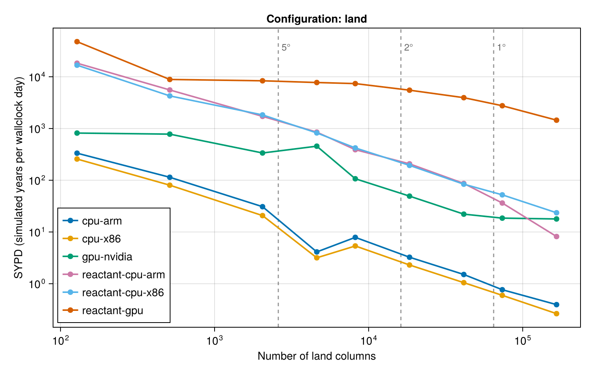
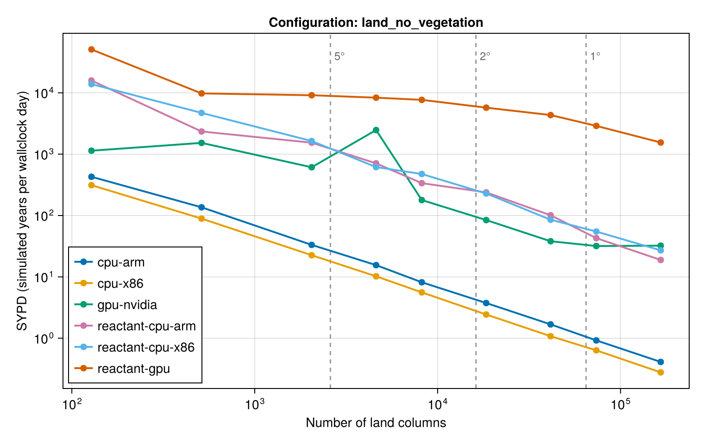
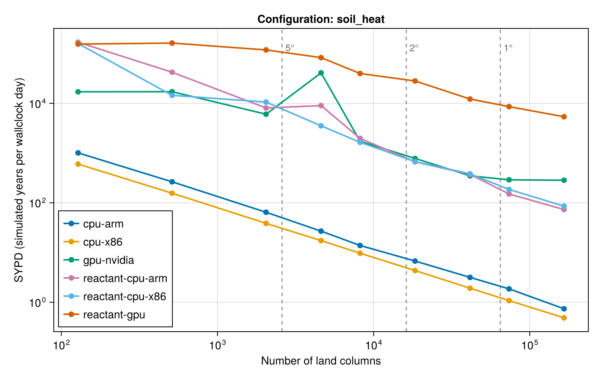

Performance of Terrarium.jl across architectures and resolutions. This page is generated at documentation-build time from benchmark/assets/benchmark_results.json, which is updated by benchmark/manual_benchmarking.jl. Running the benchmark on another architecture adds a series to each figure, a column to the overview table, and a section to the bottom of this page.
Every configuration runs for a fixed number of time steps without output. Initialization and - under Reactant - XLA compilation happen before the clock starts and are reported separately; the timed section covers only the stepping loop. A run is timed once and takes a few seconds, so treat the numbers as indicative: ±20% between repetitions is normal.
The benchmark grids are full Gaussian grids in which every point is an active land column (i.e. a. rock planet configuration), so a real land–sea mask at the same resolution has roughly a third as many columns. The model configurations themselves are defined in benchmark/model_configurations.jl.



Simulated years per wallclock day for each configuration and resolution. — means the architecture has not been benchmarked yet, skipped that resolution, or could not run that configuration; the per-architecture sections below say which.
| Configuration | Columns | cpu-arm | cpu-x86 | gpu-nvidia | reactant-cpu-arm | reactant-cpu-x86 | reactant-gpu |
|---|
land | 128 | 334 | 257 | 817 | 18311 | 16761 | 47766 |
land | 512 | 114 | 80 | 779 | 5563 | 4272 | 8877 |
land | 2048 | 31 | 21 | 337 | 1717 | 1833 | 8368 |
land | 4608 | 4.12 | 3.17 | 456 | 852 | 822 | 7748 |
land | 8192 | 7.87 | 5.37 | 107 | 390 | 422 | 7384 |
land | 18432 | 3.25 | 2.3 | 49 | 208 | 194 | 5508 |
land | 41472 | 1.51 | 1.05 | 22 | 87 | 84 | 3946 |
land | 73728 | 0.77 | 0.6 | 19 | 36 | 52 | 2757 |
land | 165888 | 0.39 | 0.26 | 18 | 8.17 | 24 | 1450 |
land_no_vegetation | 128 | 428 | 312 | 1139 | 15876 | 13850 | 50896 |
land_no_vegetation | 512 | 136 | 89 | 1527 | 2342 | 4704 | 9771 |
land_no_vegetation | 2048 | 33 | 23 | 612 | 1538 | 1637 | 9129 |
land_no_vegetation | 4608 | 16 | 10 | 2473 | 708 | 616 | 8330 |
land_no_vegetation | 8192 | 8.17 | 5.59 | 179 | 337 | 475 | 7672 |
land_no_vegetation | 18432 | 3.75 | 2.44 | 84 | 238 | 229 | 5727 |
land_no_vegetation | 41472 | 1.68 | 1.08 | 38 | 101 | 85 | 4337 |
land_no_vegetation | 73728 | 0.92 | 0.63 | 32 | 43 | 55 | 2888 |
land_no_vegetation | 165888 | 0.41 | 0.28 | 32 | 19 | 27 | 1550 |
soil_heat | 128 | 1011 | 602 | 17109 | 170034 | 159726 | 155936 |
soil_heat | 512 | 265 | 156 | 17173 | 42299 | 14526 | 163367 |
soil_heat | 2048 | 65 | 39 | 6057 | 8078 | 10623 | 118920 |
soil_heat | 4608 | 27 | 17 | 41153 | 9025 | 3541 | 83290 |
soil_heat | 8192 | 14 | 9.69 | 1729 | 1978 | 1648 | 39899 |
soil_heat | 18432 | 6.75 | 4.34 | 781 | 668 | 673 | 28231 |
soil_heat | 41472 | 3.17 | 1.92 | 349 | 374 | 383 | 12236 |
soil_heat | 73728 | 1.86 | 1.08 | 290 | 151 | 186 | 8601 |
soil_heat | 165888 | 0.74 | 0.49 | 285 | 73 | 86 | 5386 |
Created for Terrarium.jl v0.1.7 on Wed, 07 Oct 2026 14:14:59 in default mode (1x time steps, 1 thread(s)).
julia> versioninfo()
Julia Version 1.12.6
Commit 15346901f00 (2026-04-09 19:20 UTC)
Build Info:
Official https://julialang.org release
Platform Info:
OS: macOS (arm64-apple-darwin24.0.0)
CPU: 8 × Apple M3
WORD_SIZE: 64
LLVM: libLLVM-18.1.7 (ORCJIT, apple-m3)
GC: Built with stock GC
Threads: 1 default, 1 interactive, 1 GC (on 4 virtual cores)
Environment:
JULIA_NUM_PRECOMPILE_TASKS = 2
| Configuration | Res | Columns | Δt | Steps | SYPD | ms/step | Mcell-steps/s | Memory |
|---|
| land | 3.75° | 4608 | 600 | 217 | 4.1 | 400 | 0.345 | 6.86 MiB |
| landnovegetation | 3.75° | 4608 | 600 | 217 | 15 | 106 | 1.3 | 5.76 MiB |
| soil_heat | 3.75° | 4608 | 600 | 217 | 30 | 54.7 | 2.53 | 3.85 MiB |
| Configuration | Res | Columns | Δt | Steps | SYPD | ms/step | Mcell-steps/s | Memory |
|---|
| land | 22.50° | 128 | 600 | 2000 | 334 | 4.92 | 0.78 | 204.14 KiB |
| land | 11.25° | 512 | 600 | 1953 | 114 | 14.4 | 1.07 | 789.14 KiB |
| land | 5.62° | 2048 | 600 | 488 | 31 | 53.3 | 1.15 | 3.06 MiB |
| land | 3.75° | 4608 | 600 | 217 | 4.12 | 399 | 0.347 | 6.86 MiB |
| land | 2.81° | 8192 | 600 | 122 | 7.87 | 209 | 1.18 | 12.20 MiB |
| land | 1.88° | 18432 | 600 | 54 | 3.25 | 505 | 1.09 | 27.43 MiB |
| land | 1.25° | 41472 | 600 | 24 | 1.51 | 1090 | 1.14 | 61.71 MiB |
| land | 0.94° | 73728 | 600 | 20 | 0.77 | 2150 | 1.03 | 109.70 MiB |
| land | 0.62° | 165888 | 600 | 20 | 0.39 | 4170 | 1.19 | 246.81 MiB |
| Configuration | Res | Columns | Δt | Steps | SYPD | ms/step | Mcell-steps/s | Memory |
|---|
| landnovegetation | 22.50° | 128 | 600 | 2000 | 428 | 3.84 | 1 | 171.16 KiB |
| landnovegetation | 11.25° | 512 | 600 | 1953 | 136 | 12.1 | 1.27 | 661.66 KiB |
| landnovegetation | 5.62° | 2048 | 600 | 488 | 33 | 49.4 | 1.24 | 2.56 MiB |
| landnovegetation | 3.75° | 4608 | 600 | 217 | 16 | 106 | 1.31 | 5.76 MiB |
| landnovegetation | 2.81° | 8192 | 600 | 122 | 8.17 | 201 | 1.22 | 10.23 MiB |
| landnovegetation | 1.88° | 18432 | 600 | 54 | 3.75 | 438 | 1.26 | 23.00 MiB |
| landnovegetation | 1.25° | 41472 | 600 | 24 | 1.68 | 977 | 1.27 | 51.74 MiB |
| landnovegetation | 0.94° | 73728 | 600 | 20 | 0.92 | 1780 | 1.24 | 91.98 MiB |
| landnovegetation | 0.62° | 165888 | 600 | 20 | 0.41 | 4000 | 1.25 | 206.94 MiB |
| Configuration | Res | Columns | Δt | Steps | SYPD | ms/step | Mcell-steps/s | Memory |
|---|
| soil_heat | 22.50° | 128 | 600 | 2000 | 1011 | 1.63 | 2.36 | 114.63 KiB |
| soil_heat | 11.25° | 512 | 600 | 1953 | 265 | 6.21 | 2.48 | 443.13 KiB |
| soil_heat | 5.62° | 2048 | 600 | 488 | 65 | 25.4 | 2.42 | 1.72 MiB |
| soil_heat | 3.75° | 4608 | 600 | 217 | 27 | 60.9 | 2.27 | 3.85 MiB |
| soil_heat | 2.81° | 8192 | 600 | 122 | 14 | 118 | 2.08 | 6.85 MiB |
| soil_heat | 1.88° | 18432 | 600 | 54 | 6.75 | 243 | 2.27 | 15.40 MiB |
| soil_heat | 1.25° | 41472 | 600 | 24 | 3.17 | 519 | 2.4 | 34.65 MiB |
| soil_heat | 0.94° | 73728 | 600 | 20 | 1.86 | 884 | 2.5 | 61.60 MiB |
| soil_heat | 0.62° | 165888 | 600 | 20 | 0.74 | 2220 | 2.24 | 138.59 MiB |
| Configuration | Res | Columns | L | Δt | Steps | SYPD | ms/step | Mcell-steps/s | Memory |
|---|
| land | 3.75° | 4608 | 10 | 600 | 651 | 32 | 51.4 | 0.896 | 3.70 MiB |
| land | 3.75° | 4608 | 20 | 600 | 326 | 20 | 83 | 1.11 | 5.28 MiB |
| land | 3.75° | 4608 | 30 | 600 | 217 | 3.93 | 418 | 0.331 | 6.86 MiB |
| land | 3.75° | 4608 | 60 | 600 | 109 | 5.82 | 282 | 0.98 | 11.62 MiB |
| land | 3.75° | 4608 | 100 | 600 | 65 | 4.03 | 407 | 1.13 | 17.95 MiB |
| Configuration | NF | Res | Columns | Δt | Steps | SYPD | ms/step | Mcell-steps/s | Memory |
|---|
| land | Float32 | 3.75° | 4608 | 600 | 217 | 3.86 | 426 | 0.325 | 6.86 MiB |
| land | Float64 | 3.75° | 4608 | 600 | 217 | 10 | 159 | 0.87 | 13.73 MiB |
| Configuration | Variant | Res | Columns | Δt | Steps | SYPD | ms/step | Mcell-steps/s | Memory |
|---|
| land | ForwardEuler | 3.75° | 4608 | 600 | 217 | 3.84 | 428 | 0.323 | 6.86 MiB |
| land | Heun | 3.75° | 4608 | 600 | 217 | 1.85 | 890 | 0.155 | 6.86 MiB |
Created for Terrarium.jl v0.1.9-DEV on Fri, 09 Oct 2026 12:09:48 in default mode (1x time steps, 1 thread(s)).
julia> versioninfo()
Julia Version 1.12.2
Commit ca9b6662be4 (2025-11-20 16:25 UTC)
Build Info:
Official https://julialang.org release
Platform Info:
OS: Linux (x86_64-linux-gnu)
CPU: 128 × AMD EPYC 9554 64-Core Processor
WORD_SIZE: 64
LLVM: libLLVM-18.1.7 (ORCJIT, znver4)
GC: Built with stock GC
Threads: 1 default, 1 interactive, 1 GC (on 128 virtual cores)
Environment:
LD_LIBRARY_PATH = /usr/local/lib:/usr/local/lib:
| Configuration | Res | Columns | Δt | Steps | SYPD | ms/step | Mcell-steps/s | Memory |
|---|
| land | 3.75° | 4608 | 600 | 217 | 3.25 | 505 | 0.274 | 6.86 MiB |
| landnovegetation | 3.75° | 4608 | 600 | 217 | 10 | 158 | 0.877 | 5.76 MiB |
| soil_heat | 3.75° | 4608 | 600 | 217 | 18 | 91.1 | 1.52 | 3.85 MiB |
| Configuration | Res | Columns | Δt | Steps | SYPD | ms/step | Mcell-steps/s | Memory |
|---|
| land | 22.50° | 128 | 600 | 2000 | 257 | 6.39 | 0.601 | 204.14 KiB |
| land | 11.25° | 512 | 600 | 1953 | 80 | 20.5 | 0.751 | 789.14 KiB |
| land | 5.62° | 2048 | 600 | 488 | 21 | 79.2 | 0.776 | 3.06 MiB |
| land | 3.75° | 4608 | 600 | 217 | 3.17 | 518 | 0.267 | 6.86 MiB |
| land | 2.81° | 8192 | 600 | 122 | 5.37 | 306 | 0.803 | 12.20 MiB |
| land | 1.88° | 18432 | 600 | 54 | 2.3 | 713 | 0.775 | 27.43 MiB |
| land | 1.25° | 41472 | 600 | 24 | 1.05 | 1570 | 0.794 | 61.71 MiB |
| land | 0.94° | 73728 | 600 | 20 | 0.6 | 2760 | 0.803 | 109.70 MiB |
| land | 0.62° | 165888 | 600 | 20 | 0.26 | 6220 | 0.8 | 246.81 MiB |
| Configuration | Res | Columns | Δt | Steps | SYPD | ms/step | Mcell-steps/s | Memory |
|---|
| landnovegetation | 22.50° | 128 | 600 | 2000 | 312 | 5.26 | 0.73 | 171.16 KiB |
| landnovegetation | 11.25° | 512 | 600 | 1953 | 89 | 18.4 | 0.833 | 661.66 KiB |
| landnovegetation | 5.62° | 2048 | 600 | 488 | 23 | 72.9 | 0.843 | 2.56 MiB |
| landnovegetation | 3.75° | 4608 | 600 | 217 | 10 | 161 | 0.86 | 5.76 MiB |
| landnovegetation | 2.81° | 8192 | 600 | 122 | 5.59 | 294 | 0.837 | 10.23 MiB |
| landnovegetation | 1.88° | 18432 | 600 | 54 | 2.44 | 674 | 0.82 | 23.00 MiB |
| landnovegetation | 1.25° | 41472 | 600 | 24 | 1.08 | 1520 | 0.817 | 51.74 MiB |
| landnovegetation | 0.94° | 73728 | 600 | 20 | 0.63 | 2590 | 0.854 | 91.98 MiB |
| landnovegetation | 0.62° | 165888 | 600 | 20 | 0.28 | 5910 | 0.842 | 206.94 MiB |
| Configuration | Res | Columns | Δt | Steps | SYPD | ms/step | Mcell-steps/s | Memory |
|---|
| soil_heat | 22.50° | 128 | 600 | 2000 | 602 | 2.73 | 1.41 | 114.63 KiB |
| soil_heat | 11.25° | 512 | 600 | 1953 | 156 | 10.5 | 1.46 | 443.13 KiB |
| soil_heat | 5.62° | 2048 | 600 | 488 | 39 | 42.5 | 1.45 | 1.72 MiB |
| soil_heat | 3.75° | 4608 | 600 | 217 | 17 | 94.4 | 1.46 | 3.85 MiB |
| soil_heat | 2.81° | 8192 | 600 | 122 | 9.69 | 169 | 1.45 | 6.85 MiB |
| soil_heat | 1.88° | 18432 | 600 | 54 | 4.34 | 378 | 1.46 | 15.40 MiB |
| soil_heat | 1.25° | 41472 | 600 | 24 | 1.92 | 856 | 1.45 | 34.65 MiB |
| soil_heat | 0.94° | 73728 | 600 | 20 | 1.08 | 1520 | 1.45 | 61.60 MiB |
| soil_heat | 0.62° | 165888 | 600 | 20 | 0.49 | 3380 | 1.47 | 138.59 MiB |
| Configuration | Res | Columns | L | Δt | Steps | SYPD | ms/step | Mcell-steps/s | Memory |
|---|
| land | 3.75° | 4608 | 10 | 600 | 651 | 23 | 70.6 | 0.653 | 3.70 MiB |
| land | 3.75° | 4608 | 20 | 600 | 326 | 13 | 124 | 0.743 | 5.28 MiB |
| land | 3.75° | 4608 | 30 | 600 | 217 | 3.08 | 533 | 0.259 | 6.86 MiB |
| land | 3.75° | 4608 | 60 | 600 | 109 | 4.8 | 342 | 0.809 | 11.62 MiB |
| land | 3.75° | 4608 | 100 | 600 | 65 | 2.92 | 562 | 0.819 | 17.95 MiB |
| Configuration | NF | Res | Columns | Δt | Steps | SYPD | ms/step | Mcell-steps/s | Memory |
|---|
| land | Float32 | 3.75° | 4608 | 600 | 217 | 3.02 | 543 | 0.254 | 6.86 MiB |
| land | Float64 | 3.75° | 4608 | 600 | 217 | 7.45 | 220 | 0.627 | 13.73 MiB |
| Configuration | Variant | Res | Columns | Δt | Steps | SYPD | ms/step | Mcell-steps/s | Memory |
|---|
| land | ForwardEuler | 3.75° | 4608 | 600 | 217 | 3.04 | 540 | 0.256 | 6.86 MiB |
| land | Heun | 3.75° | 4608 | 600 | 217 | 1.48 | 1110 | 0.124 | 6.86 MiB |
Created for Terrarium.jl v0.1.9-DEV on Fri, 09 Oct 2026 11:37:19 in default mode (1x time steps, 1 thread(s)).
julia> versioninfo()
Julia Version 1.12.2
Commit ca9b6662be4 (2025-11-20 16:25 UTC)
Build Info:
Official https://julialang.org release
Platform Info:
OS: Linux (x86_64-linux-gnu)
CPU: 128 × AMD EPYC 9554 64-Core Processor
WORD_SIZE: 64
LLVM: libLLVM-18.1.7 (ORCJIT, znver4)
GC: Built with stock GC
Threads: 1 default, 1 interactive, 1 GC (on 128 virtual cores)
Environment:
LD_LIBRARY_PATH = /usr/local/lib:/usr/local/lib:
julia> CUDA.versioninfo()
CUDA toolchain:
- runtime 13.3.0, artifact installation
- driver 580.126.9 for 13.3
- compiler 13.3.33, artifact installation
CUDA libraries:
- cuBLAS: 13.6.0
- cuSPARSE: 12.8.2
- cuSOLVER: 12.2.6
- cuFFT: 12.3.0
- cuRAND: 10.4.3
- CUPTI: 2026.2.1 (API 13.3.1)
- NVML: 13.0.0+580.126.9
Julia packages:
- CUDACore: 6.2.2
- GPUArrays: 11.5.16
- GPUCompiler: 1.23.0
- KernelAbstractions: 0.9.44
- CUDA_Driver_jll: 13.3.1+0
- CUDA_Compiler_jll: 0.4.4+1
- CUDA_Runtime_jll: 0.23.0+1
- NVPTX_LLVM_Backend_jll: 22.1.7+1
Toolchain:
- Julia: 1.12.2
- LLVM: 18.1.7
1 device:
0: NVIDIA H100 80GB HBM3 (sm_90, 77.964 GiB / 79.647 GiB available)
compiles to sm_90a / PTX 9.3 (LLVM: sm_90a / PTX 9.0)
| Configuration | Res | Columns | Δt | Steps | SYPD | ms/step | Mcell-steps/s | Memory |
|---|
| land | 3.75° | 4608 | 600 | 217 | 148 | 11.1 | 12.4 | 6.86 MiB |
| landnovegetation | 3.75° | 4608 | 600 | 217 | 225 | 7.31 | 18.9 | 5.76 MiB |
| soil_heat | 3.75° | 4608 | 600 | 217 | 3052 | 0.538 | 257 | 3.85 MiB |
| Configuration | Res | Columns | Δt | Steps | SYPD | ms/step | Mcell-steps/s | Memory |
|---|
| land | 22.50° | 128 | 600 | 2000 | 817 | 2.01 | 1.91 | 204.14 KiB |
| land | 11.25° | 512 | 600 | 1953 | 779 | 2.11 | 7.28 | 789.14 KiB |
| land | 5.62° | 2048 | 600 | 488 | 337 | 4.88 | 12.6 | 3.06 MiB |
| land | 3.75° | 4608 | 600 | 217 | 456 | 3.61 | 38.3 | 6.86 MiB |
| land | 2.81° | 8192 | 600 | 122 | 107 | 15.4 | 16 | 12.20 MiB |
| land | 1.88° | 18432 | 600 | 54 | 49 | 33.3 | 16.6 | 27.43 MiB |
| land | 1.25° | 41472 | 600 | 24 | 22 | 74.3 | 16.8 | 61.71 MiB |
| land | 0.94° | 73728 | 600 | 20 | 19 | 88.7 | 24.9 | 109.70 MiB |
| land | 0.62° | 165888 | 600 | 20 | 18 | 92 | 54.1 | 246.81 MiB |
| Configuration | Res | Columns | Δt | Steps | SYPD | ms/step | Mcell-steps/s | Memory |
|---|
| landnovegetation | 22.50° | 128 | 600 | 2000 | 1139 | 1.44 | 2.66 | 171.16 KiB |
| landnovegetation | 11.25° | 512 | 600 | 1953 | 1527 | 1.08 | 14.3 | 661.66 KiB |
| landnovegetation | 5.62° | 2048 | 600 | 488 | 612 | 2.69 | 22.9 | 2.56 MiB |
| landnovegetation | 3.75° | 4608 | 600 | 217 | 2473 | 0.664 | 208 | 5.76 MiB |
| landnovegetation | 2.81° | 8192 | 600 | 122 | 179 | 9.19 | 26.7 | 10.23 MiB |
| landnovegetation | 1.88° | 18432 | 600 | 54 | 84 | 19.5 | 28.4 | 23.00 MiB |
| landnovegetation | 1.25° | 41472 | 600 | 24 | 38 | 43.1 | 28.8 | 51.74 MiB |
| landnovegetation | 0.94° | 73728 | 600 | 20 | 32 | 51.6 | 42.8 | 91.98 MiB |
| landnovegetation | 0.62° | 165888 | 600 | 20 | 32 | 50.9 | 97.8 | 206.94 MiB |
| Configuration | Res | Columns | Δt | Steps | SYPD | ms/step | Mcell-steps/s | Memory |
|---|
| soil_heat | 22.50° | 128 | 600 | 2000 | 17109 | 0.096 | 40 | 114.63 KiB |
| soil_heat | 11.25° | 512 | 600 | 1953 | 17173 | 0.0957 | 161 | 443.13 KiB |
| soil_heat | 5.62° | 2048 | 600 | 488 | 6057 | 0.271 | 227 | 1.72 MiB |
| soil_heat | 3.75° | 4608 | 600 | 217 | 41153 | 0.0399 | 3460 | 3.85 MiB |
| soil_heat | 2.81° | 8192 | 600 | 122 | 1729 | 0.95 | 259 | 6.85 MiB |
| soil_heat | 1.88° | 18432 | 600 | 54 | 781 | 2.1 | 263 | 15.40 MiB |
| soil_heat | 1.25° | 41472 | 600 | 24 | 349 | 4.71 | 264 | 34.65 MiB |
| soil_heat | 0.94° | 73728 | 600 | 20 | 290 | 5.66 | 391 | 61.60 MiB |
| soil_heat | 0.62° | 165888 | 600 | 20 | 285 | 5.77 | 863 | 138.59 MiB |
| Configuration | Res | Columns | L | Δt | Steps | SYPD | ms/step | Mcell-steps/s | Memory |
|---|
| land | 3.75° | 4608 | 10 | 600 | 651 | 423 | 3.88 | 11.9 | 3.70 MiB |
| land | 3.75° | 4608 | 20 | 600 | 326 | 172 | 9.57 | 9.63 | 5.28 MiB |
| land | 3.75° | 4608 | 30 | 600 | 217 | 499 | 3.29 | 42 | 6.86 MiB |
| land | 3.75° | 4608 | 60 | 600 | 109 | 88 | 18.6 | 14.9 | 11.62 MiB |
| land | 3.75° | 4608 | 100 | 600 | 65 | 56 | 29.3 | 15.7 | 17.95 MiB |
| Configuration | NF | Res | Columns | Δt | Steps | SYPD | ms/step | Mcell-steps/s | Memory |
|---|
| land | Float32 | 3.75° | 4608 | 600 | 217 | 483 | 3.4 | 40.7 | 6.86 MiB |
| land | Float64 | 3.75° | 4608 | 600 | 217 | 82 | 20 | 6.93 | 13.73 MiB |
| Configuration | Variant | Res | Columns | Δt | Steps | SYPD | ms/step | Mcell-steps/s | Memory |
|---|
| land | ForwardEuler | 3.75° | 4608 | 600 | 217 | 492 | 3.34 | 41.4 | 6.86 MiB |
| land | Heun | 3.75° | 4608 | 600 | 217 | 53 | 30.9 | 4.47 | 6.86 MiB |
Created for Terrarium.jl v0.1.7 on Wed, 07 Oct 2026 19:20:44 in default mode (1x time steps, 1 thread(s)).
julia> versioninfo()
Julia Version 1.12.6
Commit 15346901f00 (2026-04-09 19:20 UTC)
Build Info:
Official https://julialang.org release
Platform Info:
OS: macOS (arm64-apple-darwin24.0.0)
CPU: 8 × Apple M3
WORD_SIZE: 64
LLVM: libLLVM-18.1.7 (ORCJIT, apple-m3)
GC: Built with stock GC
Threads: 1 default, 1 interactive, 1 GC (on 4 virtual cores)
Environment:
JULIA_NUM_PRECOMPILE_TASKS = 2
Reactant backend: cpu (selected with Reactant.set_default_backend("cpu")).
| Configuration | Res | Columns | Δt | Steps | SYPD | ms/step | Mcell-steps/s | Memory | Compile |
|---|
| land | 3.75° | 4608 | 600 | 217 | 768 | 2.14 | 64.6 | 6.86 MiB | 557.8 s |
| landnovegetation | 3.75° | 4608 | 600 | 217 | 765 | 2.15 | 64.4 | 5.76 MiB | 182.8 s |
| soil_heat | 3.75° | 4608 | 600 | 217 | 3512 | 0.468 | 296 | 3.85 MiB | 15.7 s |
| Configuration | Res | Columns | Δt | Steps | SYPD | ms/step | Mcell-steps/s | Memory | Compile |
|---|
| land | 22.50° | 128 | 600 | 2000 | 18311 | 0.0897 | 42.8 | 204.14 KiB | 523.0 s |
| land | 11.25° | 512 | 600 | 1953 | 5563 | 0.295 | 52 | 789.14 KiB | 507.6 s |
| land | 5.62° | 2048 | 600 | 488 | 1717 | 0.957 | 64.2 | 3.06 MiB | 506.1 s |
| land | 3.75° | 4608 | 600 | 217 | 852 | 1.93 | 71.7 | 6.86 MiB | 15.2 s |
| land | 2.81° | 8192 | 600 | 122 | 390 | 4.22 | 58.3 | 12.20 MiB | 535.8 s |
| land | 1.88° | 18432 | 600 | 54 | 208 | 7.91 | 69.9 | 27.43 MiB | 549.7 s |
| land | 1.25° | 41472 | 600 | 24 | 87 | 19 | 65.6 | 61.71 MiB | 606.0 s |
| land | 0.94° | 73728 | 600 | 20 | 36 | 45.3 | 48.9 | 109.70 MiB | 756.0 s |
| land | 0.62° | 165888 | 600 | 20 | 8.17 | 201 | 24.8 | 246.81 MiB | 928.5 s |
| Configuration | Res | Columns | Δt | Steps | SYPD | ms/step | Mcell-steps/s | Memory | Compile |
|---|
| landnovegetation | 22.50° | 128 | 600 | 2000 | 15876 | 0.103 | 37.1 | 171.16 KiB | 167.4 s |
| landnovegetation | 11.25° | 512 | 600 | 1953 | 2342 | 0.701 | 21.9 | 661.66 KiB | 245.0 s |
| landnovegetation | 5.62° | 2048 | 600 | 488 | 1538 | 1.07 | 57.5 | 2.56 MiB | 286.0 s |
| landnovegetation | 3.75° | 4608 | 600 | 217 | 708 | 2.32 | 59.6 | 5.76 MiB | 15.4 s |
| landnovegetation | 2.81° | 8192 | 600 | 122 | 337 | 4.88 | 50.4 | 10.23 MiB | 247.0 s |
| landnovegetation | 1.88° | 18432 | 600 | 54 | 238 | 6.9 | 80.2 | 23.00 MiB | 280.8 s |
| landnovegetation | 1.25° | 41472 | 600 | 24 | 101 | 16.3 | 76.5 | 51.74 MiB | 238.3 s |
| landnovegetation | 0.94° | 73728 | 600 | 20 | 43 | 38.4 | 57.6 | 91.98 MiB | 277.7 s |
| landnovegetation | 0.62° | 165888 | 600 | 20 | 19 | 87 | 57.2 | 206.94 MiB | 366.8 s |
| Configuration | Res | Columns | Δt | Steps | SYPD | ms/step | Mcell-steps/s | Memory | Compile |
|---|
| soil_heat | 22.50° | 128 | 600 | 2000 | 170034 | 0.00966 | 397 | 114.63 KiB | 12.8 s |
| soil_heat | 11.25° | 512 | 600 | 1953 | 42299 | 0.0388 | 396 | 443.13 KiB | 16.4 s |
| soil_heat | 5.62° | 2048 | 600 | 488 | 8078 | 0.203 | 302 | 1.72 MiB | 13.9 s |
| soil_heat | 3.75° | 4608 | 600 | 217 | 9025 | 0.182 | 759 | 3.85 MiB | 1.6 s |
| soil_heat | 2.81° | 8192 | 600 | 122 | 1978 | 0.83 | 296 | 6.85 MiB | 15.1 s |
| soil_heat | 1.88° | 18432 | 600 | 54 | 668 | 2.46 | 225 | 15.40 MiB | 17.7 s |
| soil_heat | 1.25° | 41472 | 600 | 24 | 374 | 4.4 | 283 | 34.65 MiB | 23.0 s |
| soil_heat | 0.94° | 73728 | 600 | 20 | 151 | 10.9 | 203 | 61.60 MiB | 29.0 s |
| soil_heat | 0.62° | 165888 | 600 | 20 | 73 | 22.4 | 222 | 138.59 MiB | 48.7 s |
| Configuration | Res | Columns | L | Δt | Steps | SYPD | ms/step | Mcell-steps/s | Memory | Compile |
|---|
| land | 3.75° | 4608 | 10 | 600 | 651 | 1796 | 0.915 | 50.4 | 3.70 MiB | 513.3 s |
| land | 3.75° | 4608 | 20 | 600 | 326 | 1372 | 1.2 | 76.9 | 5.28 MiB | 512.4 s |
| land | 3.75° | 4608 | 30 | 600 | 217 | 981 | 1.67 | 82.6 | 6.86 MiB | 18.3 s |
| land | 3.75° | 4608 | 60 | 600 | 109 | 483 | 3.4 | 81.3 | 11.62 MiB | 519.5 s |
| land | 3.75° | 4608 | 100 | 600 | 65 | 315 | 5.22 | 88.3 | 17.95 MiB | 517.9 s |
| Configuration | NF | Res | Columns | Δt | Steps | SYPD | ms/step | Mcell-steps/s | Memory | Compile |
|---|
| land | Float32 | 3.75° | 4608 | 600 | 217 | 546 | 3.01 | 46 | 6.86 MiB | 17.5 s |
| land | Float64 | 3.75° | 4608 | 600 | 217 | 567 | 2.9 | 47.7 | 13.73 MiB | 428.9 s |
| Configuration | Variant | Res | Columns | Δt | Steps | SYPD | ms/step | Mcell-steps/s | Memory | Compile | Status |
|---|
| land | ForwardEuler | 3.75° | 4608 | 600 | 217 | 962 | 1.71 | 81 | 6.86 MiB | 16.1 s | ok |
| land | Heun | 3.75° | 4608 | — | — | — | — | — | — | — | failed: TypeError |
Created for Terrarium.jl v0.1.9-DEV on Mon, 12 Oct 2026 19:39:21 in default mode (1x time steps, 1 thread(s)).
julia> versioninfo()
Julia Version 1.12.2
Commit ca9b6662be4 (2025-11-20 16:25 UTC)
Build Info:
Official https://julialang.org release
Platform Info:
OS: Linux (x86_64-linux-gnu)
CPU: 128 × AMD EPYC 9554 64-Core Processor
WORD_SIZE: 64
LLVM: libLLVM-18.1.7 (ORCJIT, znver4)
GC: Built with stock GC
Threads: 1 default, 1 interactive, 1 GC (on 128 virtual cores)
Environment:
LD_LIBRARY_PATH = /usr/local/lib:/usr/local/lib:
Reactant backend: cpu (selected with Reactant.set_default_backend("cpu")).
| Configuration | Res | Columns | Δt | Steps | SYPD | ms/step | Mcell-steps/s | Memory | Compile |
|---|
| land | 3.75° | 4608 | 600 | 217 | 726 | 2.26 | 61.1 | 6.86 MiB | 978.4 s |
| landnovegetation | 3.75° | 4608 | 600 | 217 | 696 | 2.36 | 58.5 | 5.76 MiB | 314.3 s |
| soil_heat | 3.75° | 4608 | 600 | 217 | 2379 | 0.691 | 200 | 3.85 MiB | 18.3 s |
| Configuration | Res | Columns | Δt | Steps | SYPD | ms/step | Mcell-steps/s | Memory | Compile |
|---|
| land | 22.50° | 128 | 600 | 2000 | 16761 | 0.098 | 39.2 | 204.14 KiB | 935.0 s |
| land | 11.25° | 512 | 600 | 1953 | 4272 | 0.385 | 39.9 | 789.14 KiB | 947.5 s |
| land | 5.62° | 2048 | 600 | 488 | 1833 | 0.896 | 68.6 | 3.06 MiB | 949.6 s |
| land | 3.75° | 4608 | 600 | 217 | 822 | 2 | 69.2 | 6.86 MiB | 20.6 s |
| land | 2.81° | 8192 | 600 | 122 | 422 | 3.9 | 63.1 | 12.20 MiB | 970.8 s |
| land | 1.88° | 18432 | 600 | 54 | 194 | 8.48 | 65.2 | 27.43 MiB | 1007.0 s |
| land | 1.25° | 41472 | 600 | 24 | 84 | 19.6 | 63.6 | 61.71 MiB | 1076.6 s |
| land | 0.94° | 73728 | 600 | 20 | 52 | 31.5 | 70.3 | 109.70 MiB | 1182.5 s |
| land | 0.62° | 165888 | 600 | 20 | 24 | 69.8 | 71.3 | 246.81 MiB | 1466.7 s |
| Configuration | Res | Columns | Δt | Steps | SYPD | ms/step | Mcell-steps/s | Memory | Compile |
|---|
| landnovegetation | 22.50° | 128 | 600 | 2000 | 13850 | 0.119 | 32.4 | 171.16 KiB | 304.6 s |
| landnovegetation | 11.25° | 512 | 600 | 1953 | 4704 | 0.349 | 44 | 661.66 KiB | 305.9 s |
| landnovegetation | 5.62° | 2048 | 600 | 488 | 1637 | 1 | 61.2 | 2.56 MiB | 308.5 s |
| landnovegetation | 3.75° | 4608 | 600 | 217 | 616 | 2.67 | 51.8 | 5.76 MiB | 11.9 s |
| landnovegetation | 2.81° | 8192 | 600 | 122 | 475 | 3.46 | 71 | 10.23 MiB | 319.7 s |
| landnovegetation | 1.88° | 18432 | 600 | 54 | 229 | 7.19 | 77 | 23.00 MiB | 336.2 s |
| landnovegetation | 1.25° | 41472 | 600 | 24 | 85 | 19.2 | 64.7 | 51.74 MiB | 377.3 s |
| landnovegetation | 0.94° | 73728 | 600 | 20 | 55 | 30 | 73.8 | 91.98 MiB | 433.4 s |
| landnovegetation | 0.62° | 165888 | 600 | 20 | 27 | 60.7 | 82 | 206.94 MiB | 591.1 s |
| Configuration | Res | Columns | Δt | Steps | SYPD | ms/step | Mcell-steps/s | Memory | Compile |
|---|
| soil_heat | 22.50° | 128 | 600 | 2000 | 159726 | 0.0103 | 373 | 114.63 KiB | 15.7 s |
| soil_heat | 11.25° | 512 | 600 | 1953 | 14526 | 0.113 | 136 | 443.13 KiB | 15.8 s |
| soil_heat | 5.62° | 2048 | 600 | 488 | 10623 | 0.155 | 397 | 1.72 MiB | 16.3 s |
| soil_heat | 3.75° | 4608 | 600 | 217 | 3541 | 0.464 | 298 | 3.85 MiB | 2.2 s |
| soil_heat | 2.81° | 8192 | 600 | 122 | 1648 | 0.997 | 247 | 6.85 MiB | 18.1 s |
| soil_heat | 1.88° | 18432 | 600 | 54 | 673 | 2.44 | 227 | 15.40 MiB | 21.3 s |
| soil_heat | 1.25° | 41472 | 600 | 24 | 383 | 4.29 | 290 | 34.65 MiB | 28.2 s |
| soil_heat | 0.94° | 73728 | 600 | 20 | 186 | 8.84 | 250 | 61.60 MiB | 38.1 s |
| soil_heat | 0.62° | 165888 | 600 | 20 | 86 | 19.1 | 260 | 138.59 MiB | 66.4 s |
| Configuration | Res | Columns | L | Δt | Steps | SYPD | ms/step | Mcell-steps/s | Memory | Compile |
|---|
| land | 3.75° | 4608 | 10 | 600 | 651 | 1800 | 0.913 | 50.5 | 3.70 MiB | 967.4 s |
| land | 3.75° | 4608 | 20 | 600 | 326 | 1252 | 1.31 | 70.2 | 5.28 MiB | 970.1 s |
| land | 3.75° | 4608 | 30 | 600 | 217 | 863 | 1.9 | 72.6 | 6.86 MiB | 21.4 s |
| land | 3.75° | 4608 | 60 | 600 | 109 | 412 | 3.99 | 69.3 | 11.62 MiB | 958.1 s |
| land | 3.75° | 4608 | 100 | 600 | 65 | 195 | 8.41 | 54.8 | 17.95 MiB | 969.2 s |
| Configuration | NF | Res | Columns | Δt | Steps | SYPD | ms/step | Mcell-steps/s | Memory | Compile |
|---|
| land | Float32 | 3.75° | 4608 | 600 | 217 | 684 | 2.4 | 57.6 | 6.86 MiB | 21.2 s |
| land | Float64 | 3.75° | 4608 | 600 | 217 | 547 | 3 | 46 | 13.73 MiB | 721.9 s |
| Configuration | Variant | Res | Columns | Δt | Steps | SYPD | ms/step | Mcell-steps/s | Memory | Compile |
|---|
| land | ForwardEuler | 3.75° | 4608 | 600 | 217 | 850 | 1.93 | 71.5 | 6.86 MiB | 21.3 s |
| land | Heun | 3.75° | 4608 | 600 | 217 | 345 | 4.77 | 29 | 6.86 MiB | 636.9 s |
Created for Terrarium.jl v0.1.9-DEV on Fri, 09 Oct 2026 21:25:41 in default mode (1x time steps, 1 thread(s)).
julia> versioninfo()
Julia Version 1.12.2
Commit ca9b6662be4 (2025-11-20 16:25 UTC)
Build Info:
Official https://julialang.org release
Platform Info:
OS: Linux (x86_64-linux-gnu)
CPU: 128 × AMD EPYC 9554 64-Core Processor
WORD_SIZE: 64
LLVM: libLLVM-18.1.7 (ORCJIT, znver4)
GC: Built with stock GC
Threads: 1 default, 1 interactive, 1 GC (on 128 virtual cores)
Environment:
LD_LIBRARY_PATH = /usr/local/lib:/usr/local/lib:
julia> CUDA.versioninfo()
CUDA toolchain:
- runtime 13.3.0, artifact installation
- driver 580.126.9 for 13.3
- compiler 13.3.33, artifact installation
CUDA libraries:
- cuBLAS: 13.6.0
- cuSPARSE: 12.8.2
- cuSOLVER: 12.2.6
- cuFFT: 12.3.0
- cuRAND: 10.4.3
- CUPTI: 2026.2.1 (API 13.3.1)
- NVML: 13.0.0+580.126.9
Julia packages:
- CUDACore: 6.2.2
- GPUArrays: 11.5.16
- GPUCompiler: 1.23.0
- KernelAbstractions: 0.9.44
- CUDA_Driver_jll: 13.3.1+0
- CUDA_Compiler_jll: 0.4.4+1
- CUDA_Runtime_jll: 0.23.0+1
- NVPTX_LLVM_Backend_jll: 22.1.7+1
Toolchain:
- Julia: 1.12.2
- LLVM: 18.1.7
1 device:
0: NVIDIA H100 80GB HBM3 (sm_90, 19.239 GiB / 79.647 GiB available)
compiles to sm_90a / PTX 9.3 (LLVM: sm_90a / PTX 9.0)
Reactant backend: gpu (selected with Reactant.set_default_backend("gpu")).
| Configuration | Res | Columns | Δt | Steps | SYPD | ms/step | Mcell-steps/s | Memory | Compile |
|---|
| land | 3.75° | 4608 | 600 | 217 | 8555 | 0.192 | 720 | 6.86 MiB | 986.6 s |
| landnovegetation | 3.75° | 4608 | 600 | 217 | 8979 | 0.183 | 756 | 5.76 MiB | 319.4 s |
| soil_heat | 3.75° | 4608 | 600 | 217 | 67258 | 0.0244 | 5660 | 3.85 MiB | 18.5 s |
| Configuration | Res | Columns | Δt | Steps | SYPD | ms/step | Mcell-steps/s | Memory | Compile |
|---|
| land | 22.50° | 128 | 600 | 2000 | 47766 | 0.0344 | 112 | 204.14 KiB | 945.3 s |
| land | 11.25° | 512 | 600 | 1953 | 8877 | 0.185 | 83 | 789.14 KiB | 950.6 s |
| land | 5.62° | 2048 | 600 | 488 | 8368 | 0.196 | 313 | 3.06 MiB | 962.7 s |
| land | 3.75° | 4608 | 600 | 217 | 7748 | 0.212 | 652 | 6.86 MiB | 21.9 s |
| land | 2.81° | 8192 | 600 | 122 | 7384 | 0.222 | 1100 | 12.20 MiB | 981.8 s |
| land | 1.88° | 18432 | 600 | 54 | 5508 | 0.298 | 1850 | 27.43 MiB | 1020.6 s |
| land | 1.25° | 41472 | 600 | 24 | 3946 | 0.416 | 2990 | 61.71 MiB | 1092.2 s |
| land | 0.94° | 73728 | 600 | 20 | 2757 | 0.596 | 3710 | 109.70 MiB | 1198.1 s |
| land | 0.62° | 165888 | 600 | 20 | 1450 | 1.13 | 4390 | 246.81 MiB | 1489.3 s |
| Configuration | Res | Columns | Δt | Steps | SYPD | ms/step | Mcell-steps/s | Memory | Compile |
|---|
| landnovegetation | 22.50° | 128 | 600 | 2000 | 50896 | 0.0323 | 119 | 171.16 KiB | 313.2 s |
| landnovegetation | 11.25° | 512 | 600 | 1953 | 9771 | 0.168 | 91.4 | 661.66 KiB | 313.2 s |
| landnovegetation | 5.62° | 2048 | 600 | 488 | 9129 | 0.18 | 341 | 2.56 MiB | 315.3 s |
| landnovegetation | 3.75° | 4608 | 600 | 217 | 8330 | 0.197 | 701 | 5.76 MiB | 13.4 s |
| landnovegetation | 2.81° | 8192 | 600 | 122 | 7672 | 0.214 | 1150 | 10.23 MiB | 323.1 s |
| landnovegetation | 1.88° | 18432 | 600 | 54 | 5727 | 0.287 | 1930 | 23.00 MiB | 342.0 s |
| landnovegetation | 1.25° | 41472 | 600 | 24 | 4337 | 0.379 | 3280 | 51.74 MiB | 385.4 s |
| landnovegetation | 0.94° | 73728 | 600 | 20 | 2888 | 0.569 | 3890 | 91.98 MiB | 442.7 s |
| landnovegetation | 0.62° | 165888 | 600 | 20 | 1550 | 1.06 | 4700 | 206.94 MiB | 599.2 s |
| Configuration | Res | Columns | Δt | Steps | SYPD | ms/step | Mcell-steps/s | Memory | Compile |
|---|
| soil_heat | 22.50° | 128 | 600 | 2000 | 155936 | 0.0105 | 365 | 114.63 KiB | 15.7 s |
| soil_heat | 11.25° | 512 | 600 | 1953 | 163367 | 0.0101 | 1530 | 443.13 KiB | 16.1 s |
| soil_heat | 5.62° | 2048 | 600 | 488 | 118920 | 0.0138 | 4450 | 1.72 MiB | 16.3 s |
| soil_heat | 3.75° | 4608 | 600 | 217 | 83290 | 0.0197 | 7010 | 3.85 MiB | 2.2 s |
| soil_heat | 2.81° | 8192 | 600 | 122 | 39899 | 0.0412 | 5970 | 6.85 MiB | 18.1 s |
| soil_heat | 1.88° | 18432 | 600 | 54 | 28231 | 0.0582 | 9500 | 15.40 MiB | 21.7 s |
| soil_heat | 1.25° | 41472 | 600 | 24 | 12236 | 0.134 | 9270 | 34.65 MiB | 28.8 s |
| soil_heat | 0.94° | 73728 | 600 | 20 | 8601 | 0.191 | 11600 | 61.60 MiB | 39.0 s |
| soil_heat | 0.62° | 165888 | 600 | 20 | 5386 | 0.305 | 16300 | 138.59 MiB | 67.4 s |
| Configuration | Res | Columns | L | Δt | Steps | SYPD | ms/step | Mcell-steps/s | Memory | Compile |
|---|
| land | 3.75° | 4608 | 10 | 600 | 651 | 8288 | 0.198 | 232 | 3.70 MiB | 953.3 s |
| land | 3.75° | 4608 | 20 | 600 | 326 | 7578 | 0.217 | 425 | 5.28 MiB | 969.6 s |
| land | 3.75° | 4608 | 30 | 600 | 217 | 7540 | 0.218 | 635 | 6.86 MiB | 23.1 s |
| land | 3.75° | 4608 | 60 | 600 | 109 | 6216 | 0.264 | 1050 | 11.62 MiB | 967.1 s |
| land | 3.75° | 4608 | 100 | 600 | 65 | 5491 | 0.299 | 1540 | 17.95 MiB | 976.7 s |
| Configuration | NF | Res | Columns | Δt | Steps | SYPD | ms/step | Mcell-steps/s | Memory | Compile |
|---|
| land | Float32 | 3.75° | 4608 | 600 | 217 | 7359 | 0.223 | 619 | 6.86 MiB | 23.1 s |
| land | Float64 | 3.75° | 4608 | 600 | 217 | 4894 | 0.336 | 412 | 13.73 MiB | 720.4 s |
| Configuration | Variant | Res | Columns | Δt | Steps | SYPD | ms/step | Mcell-steps/s | Memory | Compile |
|---|
| land | ForwardEuler | 3.75° | 4608 | 600 | 217 | 7234 | 0.227 | 609 | 6.86 MiB | 23.3 s |
| land | Heun | 3.75° | 4608 | 600 | 217 | 3760 | 0.437 | 316 | 6.86 MiB | 628.9 s |